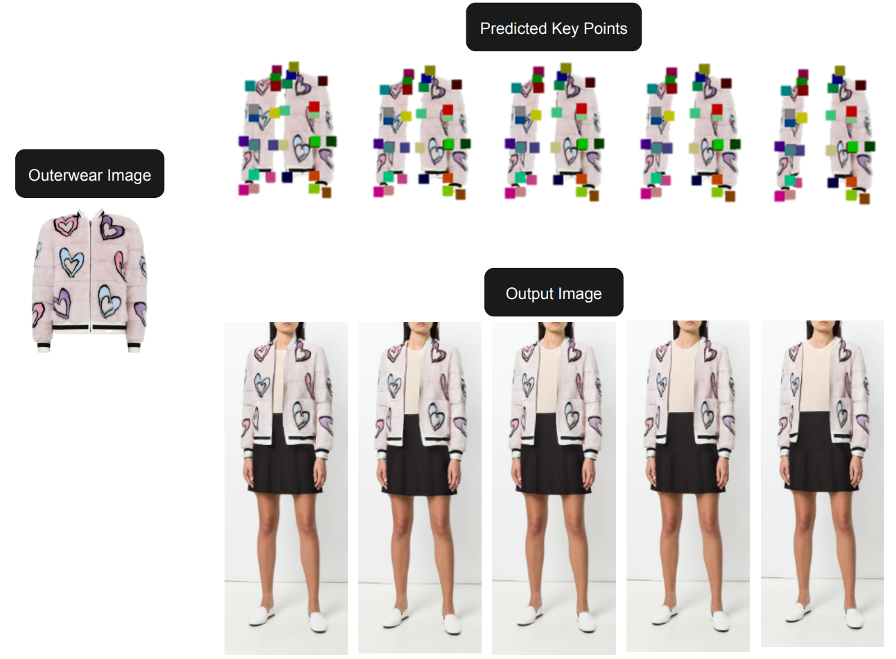

|
I am a full-time Research Assistant in Computer Vision & Machine Learning Lab at Academia Sinica working with Professor Tyng-Luh Liu.
My research interests lie in the intersection of computer vision and machine learning.
I am especially interested in the synthesis and analysis of images and videos.
I would like to build robust and creative models to help interpret the visual world and improve human’s ability to handle complex scenarios.
|
{kind=link}
|
Academia Sinica |
UIUC |
NCTU MMSC |
NCTU |
|---|

|
| abstract |
Retail photography imposes specific requirements on images. For instance, images may need uniform background colors, consistent model poses, centered products, and consistent lighting. Minor deviations from these standards impact a site's aesthetic appeal, making the images unsuitable for use. We show that Stable Diffusion methods, as currently applied, do not respect these requirements. The usual practice of training the denoiser with a very noisy image and starting inference with a sample of pure noise leads to inconsistent generated images during inference. This inconsistency occurs because it is easy to tell the difference between samples of the training and inference distributions. As a result, a network trained with centered retail product images with uniform backgrounds generates images with erratic backgrounds. The problem is easily fixed by initializing inference with samples from an approximation of noisy images. However, in using such an approximation, the joint distribution of text and noisy image at inference time still slightly differs from that at training time. This discrepancy is corrected by training the network with samples from the approximate noisy image distribution. Extensive experiments on real application data show significant qualitative and quantitative improvements in performance from adopting these procedures. Finally, our procedure can interact well with other control-based methods to further enhance the controllability of diffusion-based methods. |
|  |
| abstract |
arXiv |
This paper shows how to impose rendering policies on a virtual try-on (VTON) pipeline. Our rendering policies are lightweight procedural descriptions of how the pipeline should render outfits or render particular types of garments.
Our policies are procedural expressions describing offsets to the control points for each set of garment types.
The policies are easily authored and are generalizable to any outfit composed of garments of similar types.
We describe a VTON pipeline that accepts our policies to modify garment drapes and produce high-quality try-on images with garment attributes preserved.
|
|
| abstract |
poster |
Spectral indices are combinations of the pixel values from two or more spectral bands in a multispectral image. Spectral indices are used to highlight pixels showing the relative abundance or lack of a land-cover type of interest in an image. This study aims to build a feature space with some spectral indices and see if those indices are useful and efficient for the classification of satellite images. The training data is extracted from the NAIP program with six classes (building, barren land, trees, grassland, road, and water). Each image has four spectral bands (RED, GREEN, BLUE, and NIR). After some comparison and analysis, the spectral indices used are Modified Soil-adjusted Vegetation Index (MSAVI), Atmospherically Resistant Vegetation Index (ARVI), Normalized Difference Water Index (NDWI), Difference Spectral Building Index (DSBI), and Road Extraction Index (REI). With these spectral indices and the distribution of the four spectral bands (here, we use mean and standard deviation to represent each distribution), an 18-dimensional feature space is formed. The dimensionality of the feature space is then reduced to improve the classification accuracy using the Unsupervised Feature Selection with Ordinal Locality (UFSOL). The spectral indices have performed a good job as features and has attained 92.58% of accuracy. |

|
|
|
|
|
|
|
|
Thanks for the template from here |